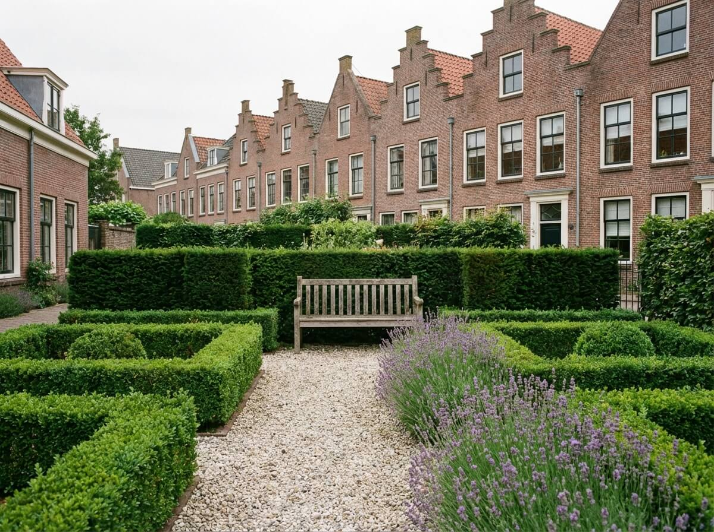
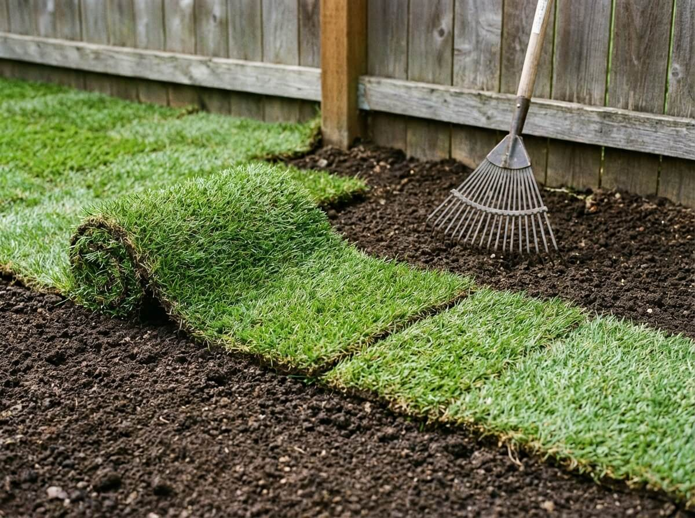
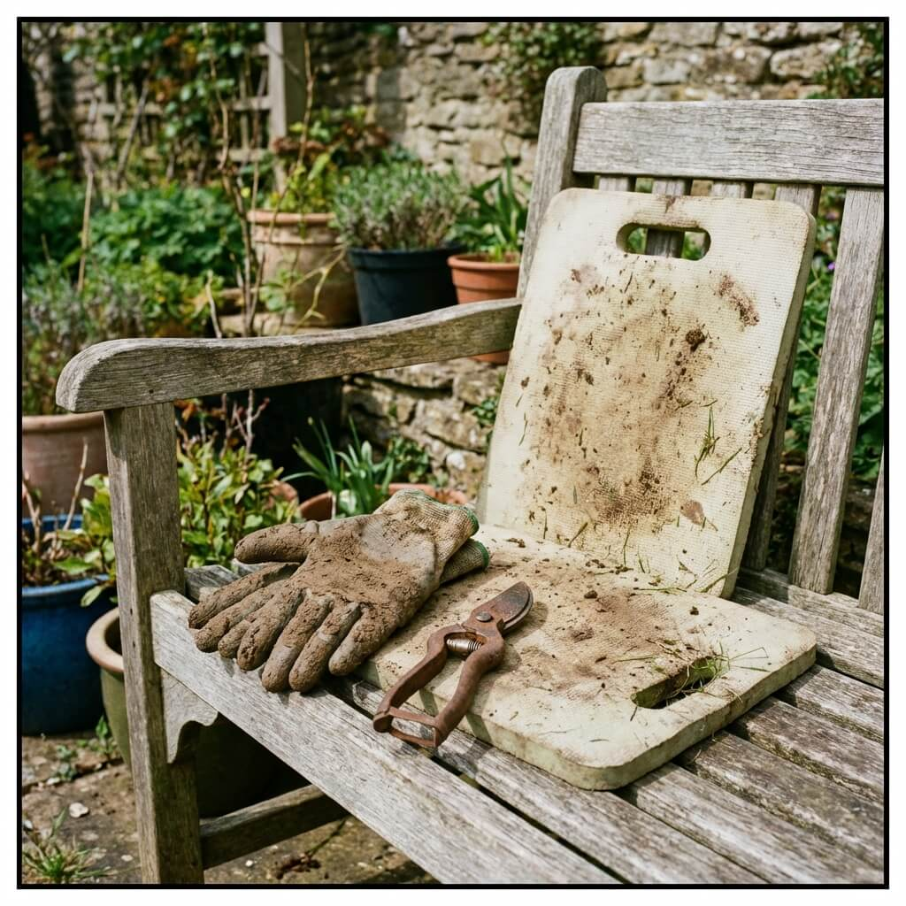

De Ultieme Voorjaarschecklist voor Uw Tuin
Het voorjaar is de perfecte tijd om uw tuin klaar te maken voor het nieuwe groeiseizoen. Van snoeien en bemesten tot nieuwe aanplant: ontdek onze complete checklist voor een vliegende start.
Lees verderPraktische adviezen, seizoenstips en de nieuwste trends in tuindesign. Geschreven door onze ervaren hoveniers.
Het voorjaar is de perfecte tijd om uw tuin klaar te maken voor het nieuwe groeiseizoen. Van snoeien en bemesten tot nieuwe aanplant: ontdek onze complete checklist voor een vliegende start.
Lees verder
Met de juiste technieken kan zelfs de kleinste stadstuin een ruime en groene oase worden. Ontdek hoe spiegels, niveauverschillen en de juiste beplanting wonderen doen.
Lees verder
De keuze voor terrasbestrating bepaalt de uitstraling van uw hele tuin. Wij vergelijken de voor- en nadelen van de populairste materialen, van bluestone tot keramische tegels.
Lees verder
Wateroverlast, hitte en droogte: uw tuin kan het verschil maken. Leer hoe u met slimme beplanting, waterberging en groene daken bijdraagt aan een beter klimaat.
Lees verder
Schrijf u in voor onze maandelijkse nieuwsbrief en ontvang seizoensgebonden tips, inspiratie en exclusieve aanbiedingen.